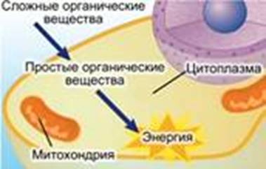
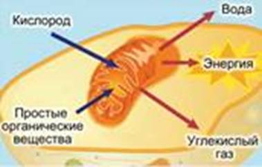
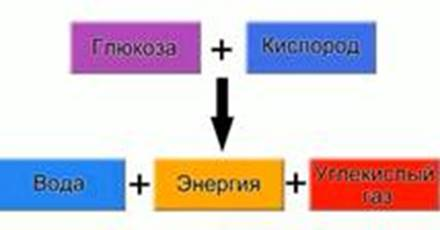
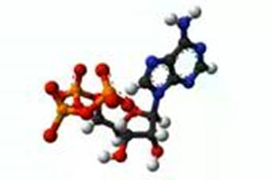
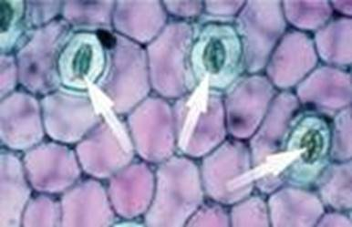
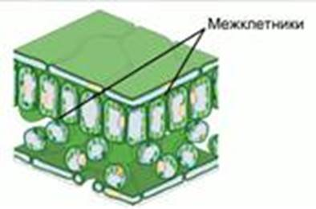
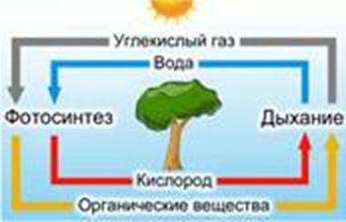
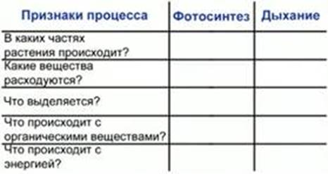

Процесс дыхания (см. Рис. 1, 2) – получение энергии при распаде сложных органических соединений.

Рис. 1. Дыхание растений (первый этап)

Рис. 2. Дыхание растений (второй этап)
При сгорании дерева выделяется энергия, запасенная в ходе фотосинтеза, в виде тепла и света. Горение – химическая реакция, в ходе которой органические соединения взаимодействуют с кислородом и распадаются до воды и углекислого газа.
По сути, дыхание сходно с горением.
Дыхание растений (см. Рис. 3) – соединение сложных органических веществ с кислородом, в ходе которого происходит постепенное выделение энергии. Также в результате дыхания выделяются углекислый газ и вода.

Рис. 3. Схема дыхания растений
В ходе дыхания энергия запасается в виде специальных энергетических веществ – соединений АТФ (см. Рис. 4).

Рис. 4. АТФ
АТФ – универсальный носитель энергии, использующийся при любых процессах жизнедеятельности растения (рост, размножение).
Водоросли поглощают кислород всей поверхностью тела, высшие растения – через устьица (см. Рис. 5).
Устьица – отверстия в коже листа растения, ограниченные замыкающими клетками.

Рис. 5. Устьица
Кислород поступает к каждой клетки по сети межклетников (см. Рис. 6).

Рис. 6. Межклетники
Межклетники – пространства, возникающие в тканях растений при разъединении, разрушении или отмирании соседних клеток. Соединяясь друг с другом, межклетники образуют в растении систему полостей и ходов, сообщающихся с внешней средой (атмосферой) через устьица.
Опыт: взять 4 бутылки из прозрачного бесцветного стекла. В одну из них положить прорастающие набухшие семена гороха или фасоли. В другую положить такое же количество сухих семян. Несколько небольших корнеплодов моркови выдержать в теплой воде 2-3 дня, для активизации их клеток. Положить их в третью бутыль. В четвертую положить свежесрезанные стебли растений с листьями. Плотно закрыть бутылки и поставить в теплое темное место. На следующий день поднести в каждую бутылку зажженную лучинку. Во всех бутылках, кроме той, где были сухие семена, лучинка гаснет. Это говорит о том, что растения потребили кислород в ходе дыхания, выделив углекислый газ. А клетки сухих семян находятся состоянии покоя, поэтому не потребляют кислород.
Дыхание корней
Растения на тяжелых глинистых или заболоченных почвах сильно страдают от недостатка кислорода. Вода перекрывает доступ воздуха к корням. Поэтому у таких растений развиваются дыхательные корни.
При выращивании сельскохозяйственных растений необходимо следить за доступом кислорода к корням. В этих целях почву разрыхляют.
На свету у растений протекают 2 взаимосвязанных процесса – дыхание и фотосинтез (см. Рис. 7).

Рис. 7. Газообмен растений
При дыхании растение выделяет углекислый газ и поглощает кислород, а при фотосинтезе – поглощает углекислый газ и выделяет кислород.
При дыхании растение потребляет меньше кислорода, чем выделяет при фотосинтезе. При фотосинтезе растение потребляет меньше углекислого газа, чем может выделить при дыхании.
Дыхание происходит непрерывно во всех органах растения. Оно погибает без кислорода.
Рыхление почвы
Рыхление почвы необходимо для обеспечения достаточного поступления воздуха к корням и сохранения в почве влаги. При подсыхании почвы на ней образуется корка, которая испаряет имеющуюся влагу за счет капиллярного эффекта – свойства воды хорошо подниматься по тонким трубочкам. Также корка препятствует проникновению воды внутрь почвы.
Во время рыхления корка разрушается, и влага в поверхностном слое сохраняется дольше.
Заполните таблицу (см. Рис. 8):

Рис. 8. Таблица
Список литературы
1. Биология. Бактерии, грибы, растения. 6 кл.: учеб. для общеобразоват. учреждений / В.В. Пасечник. – 14-е изд., стереотип. – М.: Дрофа, 2011. – 304 с.: ил.
2. Тихонова Е.Т., Романова Н.И. Биология, 6. – М.: Русское слово.
3. Исаева Т.А., Романова Н.И. Биология, 6. – М.: Русское слово.
Дополнительные рекомендованные ссылки на ресурсы сети Интернет
1. Fizrast.ru (Источник).
2. Scienceland.info (Источник).
3. Biolicey2vrn.ucoz.ru (Источник).
Домашнее задание
1. Биология. Бактерии, грибы, растения. 6 кл.: учеб. для общеобразоват. учреждений / В.В. Пасечник. – 14-е изд., стереотип. – М.: Дрофа, 2011. – 304 с.: ил. – с. 169, задания и вопрос 1 (Источник).
2. Что такое АТФ?
3. Назовите дыхательные органы растений.
4. * Зимой процессы жизнедеятельности растений замедляются. Узнайте, каким образом дышат растения зимой.